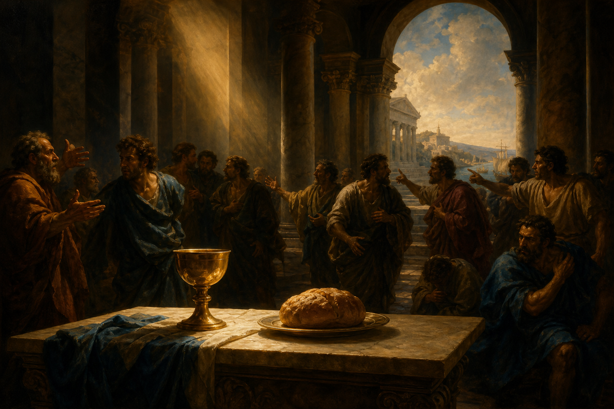

New Testament · Book 7 of 27
1 Corinthians
Paul writes to a gifted but quarrelsome church, confronting its divisions, its tolerance of sin, and its confusion about worship — and anchoring it all in the love that outlasts every gift.
Having heard troubling reports from Corinth, Paul writes directly and bluntly to a congregation splitting into factions, tolerating scandal, suing one another, and misusing spiritual gifts — calling them back to the cross and to love.
Though I speak with the tongues of men and of angels, and have not charity, I am become as sounding brass, or a tinkling cymbal.
What happens in 1 Corinthians
Paul opens by addressing reports of quarrels in Corinth, where believers have aligned themselves behind rival teachers, and counters their pride in human wisdom by pointing to the seeming foolishness of a crucified Christ as the true wisdom and power of God. He then works through a list of practical problems plaguing the church: sexual immorality tolerated within the congregation, believers taking each other to secular courts, questions about marriage and singleness, and whether it is permissible to eat food offered to idols, a matter Paul resolves by urging believers to limit their freedom for the sake of a weaker brother's conscience. He corrects disorder in worship, including the church's approach to the Lord's Supper, before turning to spiritual gifts, insisting that the body of Christ needs many different members functioning together and that none of those gifts matter without love, which he describes in some of Scripture's most quoted lines. The letter's climax defends the bodily resurrection of Christ as the foundation of the gospel and the guarantee of believers' own future resurrection, before closing with instructions about a collection for the Jerusalem church and final greetings.
Why it matters
1 Corinthians addresses nearly every area of church life — leadership, morality, worship, gifts, and hope — making it one of the most practically applied books in the New Testament. Its famous chapter on love and its defense of the resurrection have shaped Christian worship, ethics, and hope for two thousand years.